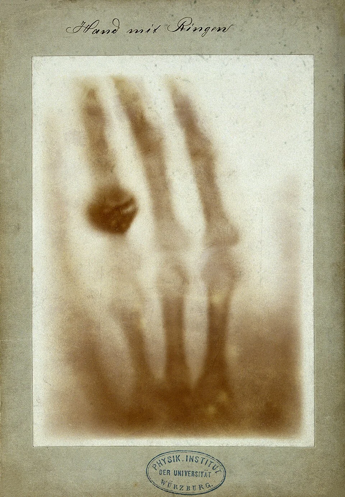
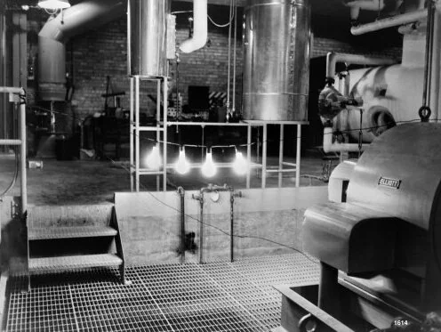
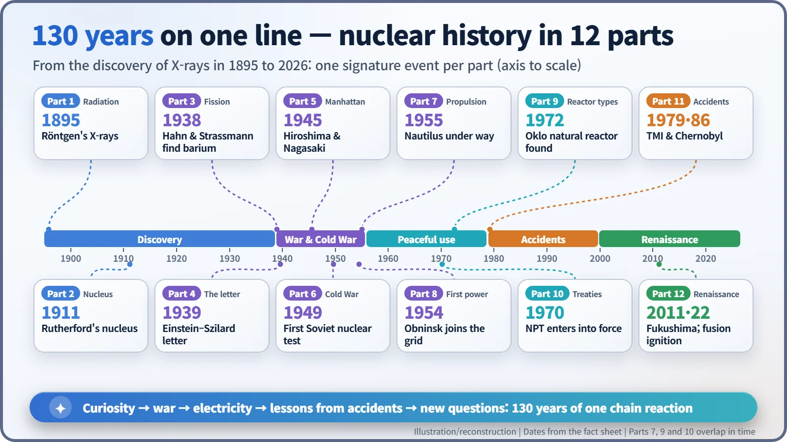
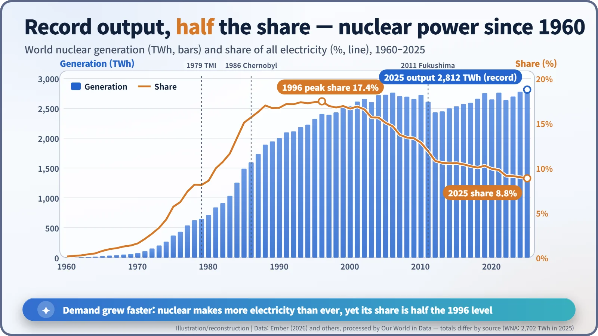

Nuclear History · 300
If 130 Years Were a Single Day — A Chain Reaction of Nuclear History, from X-rays to the Next Century
On a 24-hour clock, fission, the first reactor and Hiroshima fall within one morning hour, and in November 2026 we stand just past midnight on a new day.
Fold the 130 years from Wilhelm Röntgen's X-rays in November 1895 to November 2025 into a single 24-hour day, and nuclear history takes on a clear shape: a long night of pure curiosity, a sudden wartime rush, a working day of electricity, an evening of hard lessons from accidents, and a new set of questions at midnight. This series finale follows that arc and ends with where things stand in November 2026.
A 24-hour clock for 130 years
Take the 130 years from 8 November 1895 to 8 November 2025 and fold them into one 24-hour day. Each hour then stands for about 5.4 years. On the stroke of midnight, a screen flickers in a darkened lab in Würzburg (X-rays). Three minutes later, a photographic plate left in a drawer in Paris gives away uranium's secret (radioactivity). Then things go quiet for a long while, until the morning rush: nuclear fission is discovered at 7:57, the first reactor goes critical in Chicago at 8:41, and an atomic bomb falls on Hiroshima at 9:10. Some of the heaviest events of the whole day are packed into little more than an hour.
This final instalment walks back through the series on that 24-hour clock. Rather than retell individual stories, it follows how one stage led to the next.

Before dawn: when curiosity was everything
The heroes of the small hours were scientists at their benches. The atomic nucleus (1911) and the neutron (1932) came to light one after another, and papers crossed borders freely. Everyone knew there was enormous energy locked inside the atom, but the common view was that nobody had a way to get it out.
That view broke in Berlin in December 1938. A uranium nucleus struck by a neutron had split in two. The following year, experiments showed that fresh neutrons fly out when it splits, and the road to a chain reaction opened: one neutron splits a nucleus, which releases more neutrons, which split more nuclei. In a sense, the whole 130-year story looks like a chain reaction too, with each discovery triggering the next.
Morning: war hits the accelerator
War suddenly sped everything up. In August 1939 a letter signed by Albert Einstein went to President Roosevelt. On 2 December 1942, Chicago Pile-1 achieved the first self-sustaining chain reaction at about half a watt. Two years and eight months later, two atomic bombs fell on Hiroshima and Nagasaki. The U.S. Department of Energy's history records more than 100,000 deaths in Hiroshima alone by the end of 1945; for Nagasaki, a 1977 international study estimated about 70,000. The numbers vary by source; their weight does not. [4]
The first Soviet test in 1949 started an arms race. In December 1953, President Eisenhower's "Atoms for Peace" speech proposed turning the same technology towards electricity and medicine. The International Atomic Energy Agency (1957) and the Treaty on the Non-Proliferation of Nuclear Weapons (NPT, in force 1970) were attempts to manage both faces of the atom at once.
Late morning: the atom becomes electricity
At 10:21, the EBR-I reactor in Idaho lit four light bulbs. Obninsk in the Soviet Union (1954), Calder Hall in Britain (1956) and Shippingport in the United States (1957) then sent power into their grids, and the submarine Nautilus signalled "Underway on nuclear power." Many reactor designs competed, and radioactive isotopes spread into hospitals and laboratories.


Afternoon and evening: what accidents taught
At 3:23 p.m., Three Mile Island in the United States. At 4:42 p.m., Chernobyl. At 9:17 p.m., Fukushima. Their causes and consequences differed, but they raised a similar question: how do people and machines cope with situations the design did not anticipate? The answers piled up as institutions. After TMI came stronger operator training and an industry self-policing body, INPO. After Chernobyl came the World Association of Nuclear Operators (WANO) and the Convention on Nuclear Safety. After Fukushima, regulators tightened requirements for external hazards and loss of power.
On health, the UN Scientific Committee on the Effects of Atomic Radiation (UNSCEAR) concluded in its 2021 report that no discernible increase in radiation-related health effects is expected among Fukushima residents. Deaths linked to the long evacuation itself, so-called disaster-related deaths, are a separate and painful record. [6]
11:27 p.m., and the next day
On 5 December 2022, the U.S. National Ignition Facility (NIF) achieved fusion ignition, getting 3.15 MJ out of a target hit by 2.05 MJ of laser energy. In 2023, a small modular reactor (SMR) design received its first design certification. On 22 October 2026, Finland's Onkalo became the first spent-fuel repository in the world to receive an operating licence; as of November 2026, no fuel has yet been placed in it. [5]
What does the present look like in numbers? According to the World Nuclear Association, as of 2 November 2026 there are 443 operable reactors (about 406 GWe) and 80 under construction. The IAEA, which classifies long-term shutdowns differently, counted 413 to 416 operating reactors at the end of 2025. And there is a striking twist in the long-run data: in 2025 nuclear plants generated more electricity than ever before, yet nuclear's share of world electricity was 8.8%, about half its 1996 peak of 17.4%. Nuclear output did not shrink; global electricity demand simply grew much faster. [1] [2] [3]

Questions for a new day
The 130-year day is already over. In November 2026 we are standing at about ten past midnight on the next one, and the new day's list of questions is long:
- Can construction costs and schedules be brought down?
- How and where should spent fuel be entrusted to the future?
- How can nuclear plants in war zones be protected, and proliferation prevented?
- Will SMRs, advanced reactors and fusion move beyond demonstration to commercial use?
- How can public trust be earned?
If the past 130 years show anything, it is that nuclear history has always asked two questions together: what can we do, and what should we do. The answers for the next day have not been written yet.